Assessing crosstalk in single-grain luminescence detection
Luc Steinbuch, Anna-Maartje de Boer, Wageningen University & Research
February 2025
Source:vignettes/crosstalk.Rmd
crosstalk.RmdCrosstalk
This vignette explores the crosstalk-related functions in the “Luminescence” package, related to research paper “A novel tool to assess crosstalk in single-grain luminescence detection”, by Anna-Maartje de Boer, Luc Steinbuch, Gerard Heuvelink and Jakob Wallinga. Crosstalk in single-grain luminescence imaging (EMCCD) is the overlapping of luminescence signals from adjacent grains on a single-grain disc. The actual signal on one grain location influences the observed signal on a neighboring grain location which happens to be on the same measurement disc (one “position” in the reader). In this research and the shown functions, we define “neighboring” as rook-wise (horizontally and vertically) only, and we assume that all measurement discs have a regular grid of 10x10 grain locations.
library(Luminescence)
#> Welcome to the R package Luminescence version 1.0.0 [Built: 2025-02-21 15:22:31 UTC]
#> Luminescence data to Bayesian process: 'Don't you ever touch me again.'Explore imaged luminescence signals from a single-grain disc (one “position” in the reader)
All grain location observations on one single-grain measurement disc are represented by a vector of 100 numbers. Here we simulate such a disc by randomly selecting from two normal distributions. The prefix “vn_” means: a vector of numbers:
vn_simulated <- sample(x = c(rnorm(n = 30, mean = 2000, sd = 500),
rnorm(n = 70, mean = 20, sd = 1)),
size = 100)
vn_simulated <- round(vn_simulated) # Because photons are discrete
head(vn_simulated, n = 25)
#> [1] 1723 23 21 19 21 2175 22 19 21 19 3177 21 18 2985 21
#> [16] 21 21 2282 21 19 19 2362 20 19 21
hist(vn_simulated,
main = "Simulated signal (histogram)",
xlab = "Photon counts",
ylab = "Frequency",
breaks = 30
)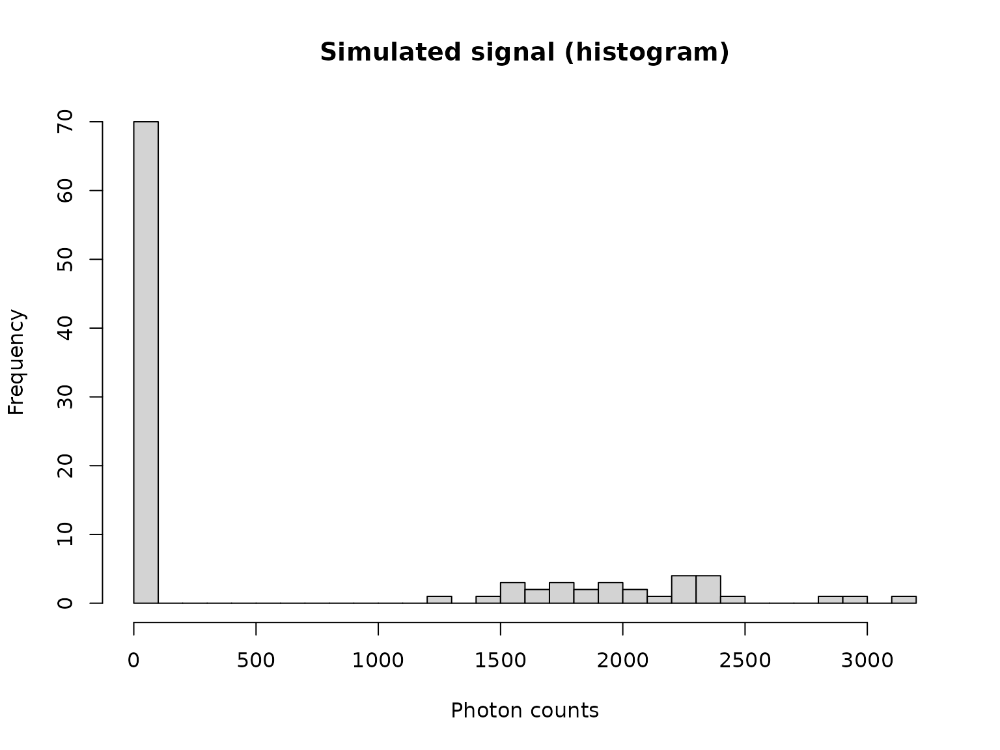
plot_SingleGrainDisc
Let’s visualize the disc/position:
par(mar = c(1, 4, 6, 4))
plot_SingleGrainDisc(object = vn_simulated,
main = "Simulated signal (measurement disc)"
)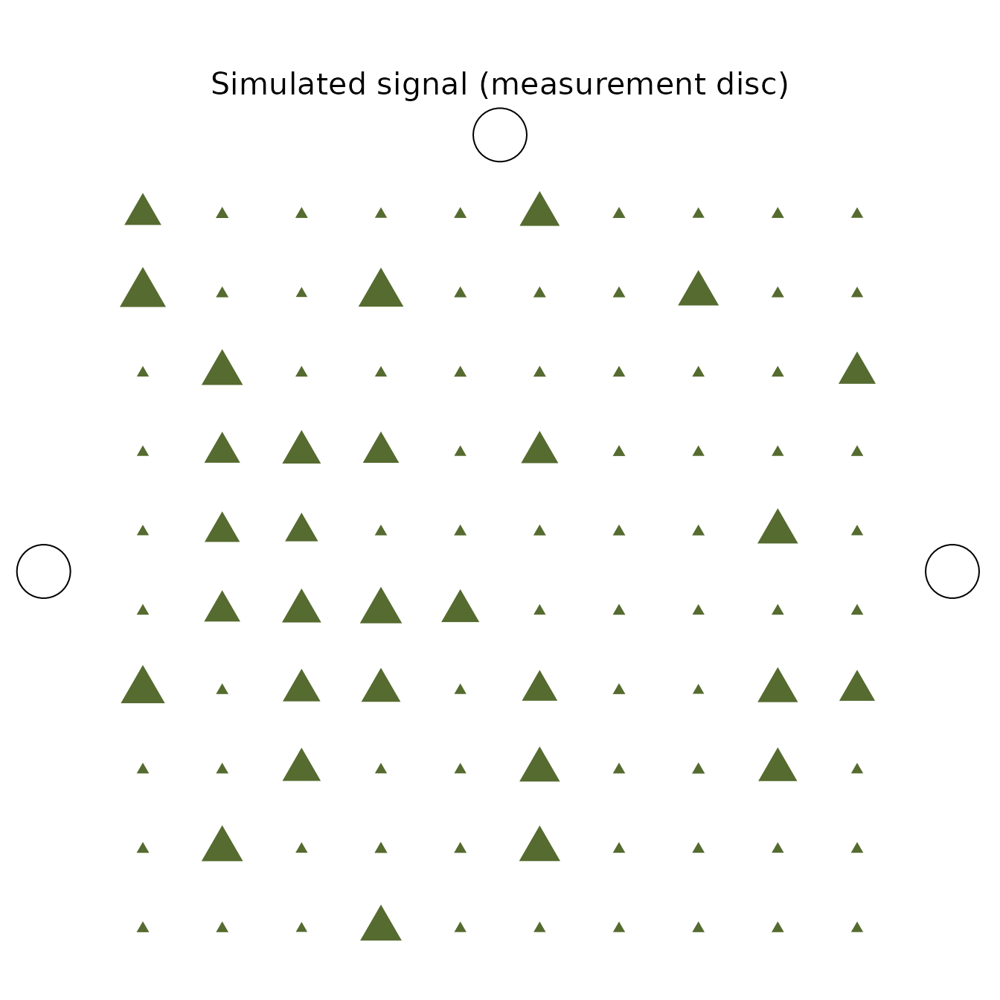
Let’s calculate Moran’s I, and the associated pseudo-p, of our randomly ordered simulated disc:
calc_MoransI(object = vn_simulated)
#> [1] -0.002584057
calc_MoransI(object = vn_simulated, compute_pseudo_p = TRUE)
#> [1] 0.447what changes if we add a serious amount, say 10%, of crosstalk?
vn_simulated_with_crosstalk <- apply_Crosstalk(object = vn_simulated,
n_crosstalk = 0.10)
vn_simulated_with_crosstalk <- round(vn_simulated_with_crosstalk)
hist(vn_simulated_with_crosstalk,
main = "Simulated signal with crosstalk (histogram)",
xlab = "Photon counts",
ylab = "Frequency",
breaks = 30
)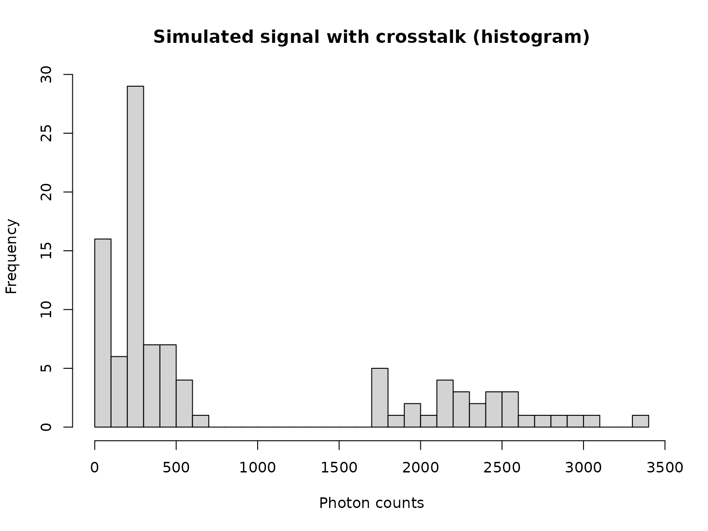
plot_SingleGrainDisc(object = vn_simulated_with_crosstalk,
main = "Simulated signal with crosstalk (measurement disc)")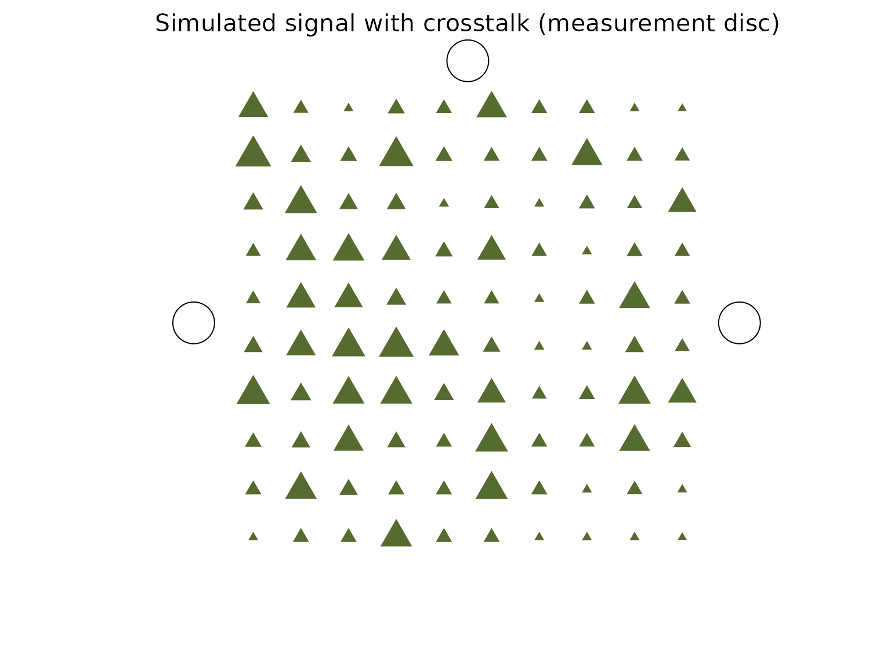
calc_MoransI(object = vn_simulated_with_crosstalk)
#> [1] 0.176199
calc_MoransI(object = vn_simulated_with_crosstalk, compute_pseudo_p = TRUE)
#> [1] 0.007Let’s try several amounts of simulated crosstalk:
df_MoransI <- data.frame(crosstalk = seq(from = 0,
to = 0.30,
length.out=50))
df_MoransI$MoransI <- NA
df_MoransI$pseudo_p <- NA
old.opts <- options(warn = -1) # silence warnings from compute_pseudo_p
for (i in 1:nrow(df_MoransI))
{
vn_simulated_with_crosstalk <- apply_Crosstalk(object = vn_simulated,
n_crosstalk = df_MoransI$crosstalk[i])
df_MoransI$MoransI[i] <- calc_MoransI(object = vn_simulated_with_crosstalk)
df_MoransI$pseudo_p[i] <-
calc_MoransI(object = vn_simulated_with_crosstalk, compute_pseudo_p = TRUE)
}
options(old.opts) # restore the default options
n_expected_I_no_spatial_autocorr <- calc_MoransI(1:100,
spatial_autocorrelation = FALSE)
##
plot(x = df_MoransI$crosstalk,
y = df_MoransI$MoransI,
ylim = range(
pretty(x = c(df_MoransI$MoransI, n_expected_I_no_spatial_autocorr))
),
## Set ylim manually to make sure the value for I for no crosstalk is visible
xlab = "Amount of added crosstalk",
ylab = "Calculated Moran's I"
)
graphics::grid()
abline(h = n_expected_I_no_spatial_autocorr,
col = "purple")
legend(x = "topleft",
legend = "Expected I if no spatial autocorrelation",
lty = "solid",
col = "purple",
cex = 0.8)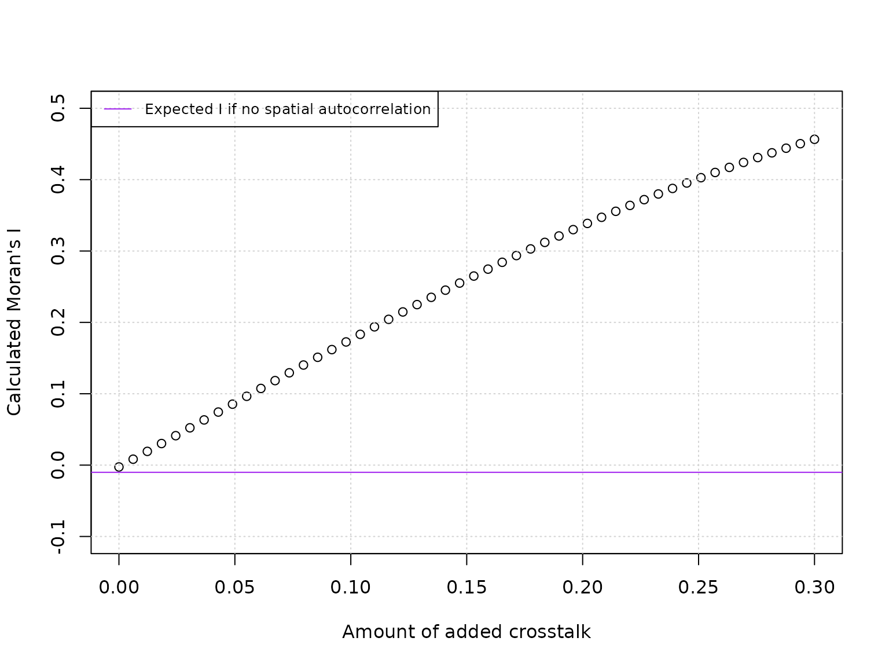
plot(x = df_MoransI$crosstalk,
y = df_MoransI$pseudo_p,
xlab = "Amount of added crosstalk",
ylab = "Generated pseudo-p of related Moran's I")
graphics::grid()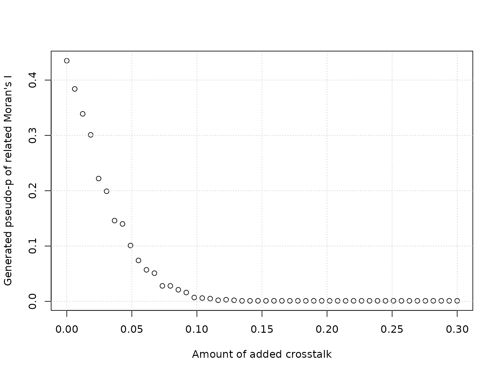
Please note that above two plots are subject to randomness; for a good assessment many simulations have to be performed.
Moran scatterplot
A way to visualise spatial auto-correlation is the Moran scatterplot:
plot_MoranScatterplot(object = vn_simulated,
main = "Moran scatterplot, simulated signal without crosstalk")
vn_simulated_with_crosstalk <- apply_Crosstalk(object = vn_simulated,
n_crosstalk = 0.25)
vn_simulated_with_crosstalk <- round(vn_simulated_with_crosstalk)
plot_MoranScatterplot(object = vn_simulated_with_crosstalk,
main = "Moran scatterplot, simulated signal with added crosstalk")
The plot area is divided into four quadrants using the mean in each dimension; the South-west and North-east quadrant represent a contribution to a positive spatial autocorrelation, while the North-west and South-east quadrants indicate a negative spatial correlation. Between the point, a least square line (which slopes indicates, but not exactly represents, Moran’s I) is added, as well as an 1:1 line (which indicates a Moran’s I of around 1, suggesting a perfect positive spatial correlation).
The internal function .get_Neighbours() was until now
used on the background, but we can explicitly call it to generate a
dataframe with all positions which are rook connected to each other
(note that we need to use the Luminescence::: prefix as
this function is not exported by the package):
vn_simulated_with_holes <- c(rnorm(30, mean = 10, sd = 5),
rnorm(30, mean = 500, sd = 50),
rep(NA, times = 40)
)
df_Neighbours <- Luminescence:::.get_Neighbours(object = vn_simulated_with_holes)
head(df_Neighbours)
#> location neighbour weight
#> 11 11 1 1
#> 12 12 2 1
#> 13 13 3 1
#> 14 14 4 1
#> 15 15 5 1
#> 16 16 6 1And we can plot the first disc, while indicating which borders are
taken into account. The corresponding
adjacent_grain_locations is calculated in the
background:
plot_SingleGrainDisc(object = vn_simulated_with_holes,
show_neighbours = TRUE,
show_location_ids = TRUE)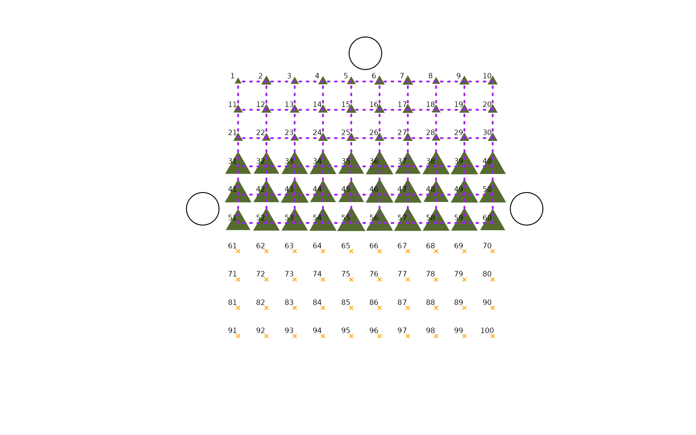
Also other functions, such as calc_MoransI(), work as long
as the remaining grid does not become too sparse. Note that in this
context all observations, even “islands” who do not border any other
grains, are used for the calculation of Moran’s I.
Add borders with certain weight
One can manually change df_Neighbours, for example add
the diagonal borders and attain a certain weight to it, and add it as
argument to almost all functions. Assume that we want to add a few
diagonal borders with weight 1/sqrt(2) to a full disc (note that the
standard relative weight for rook borders is set to one):
df_Neighbours_with_diag <- Luminescence:::.get_Neighbours(object = vn_simulated)
for (i in c(1:9, 11:19, 21:29) )
{
df_Neighbours_with_diag <- rbind(df_Neighbours_with_diag,
c(i, i+11, 1/sqrt(2))
)
}
tail(df_Neighbours_with_diag)
#> location neighbour weight
#> 202 24 35 0.7071068
#> 203 25 36 0.7071068
#> 204 26 37 0.7071068
#> 205 27 38 0.7071068
#> 206 28 39 0.7071068
#> 207 29 40 0.7071068
plot_SingleGrainDisc(object = vn_simulated,
df_neighbours = df_Neighbours_with_diag,
show_neighbours = TRUE,
show_location_ids = TRUE)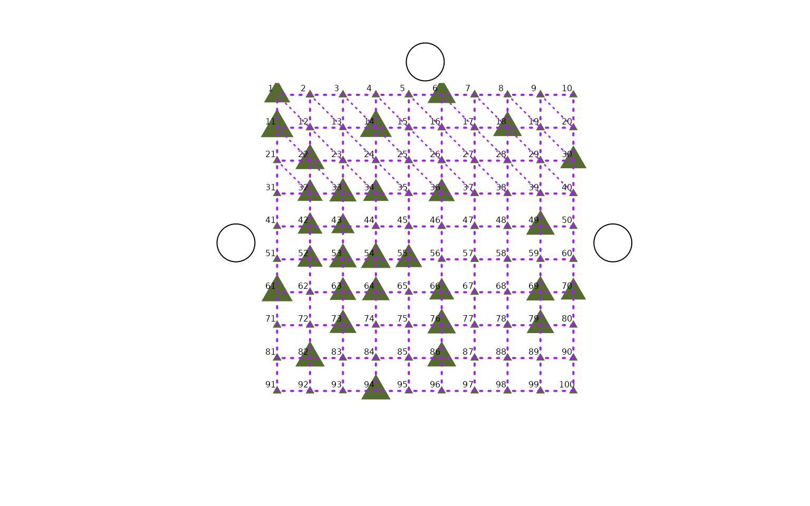
To exclude all border effects, we can use the
ignore_borders option available in
calc_MoransI() and plot_SingleGrainDisc(),
which can take out all border rows and columns when computing the data
frame of neighbours:
vn_values_to_show <-
sample(x = c(rnorm(n = 30, mean = 2000, sd = 500),
rnorm(n = 70, mean = 20, sd = 1)),
size = 100)
## Set the outer rows to NA before adding crosstalk
vn_disc_border_locations <- c(1:10,
91:100,
seq(from = 11, to = 81, by = 10),
seq(from = 20, to = 90, by = 10)
)
vn_values_to_show[vn_disc_border_locations] <- NA
vn_values_to_show <- apply_Crosstalk(object = vn_values_to_show,
n_crosstalk = 0.15)
calc_MoransI(object = vn_values_to_show)
#> [1] 0.1406872
plot_SingleGrainDisc(object = vn_values_to_show,
show_neighbours = TRUE,
ignore_borders = TRUE)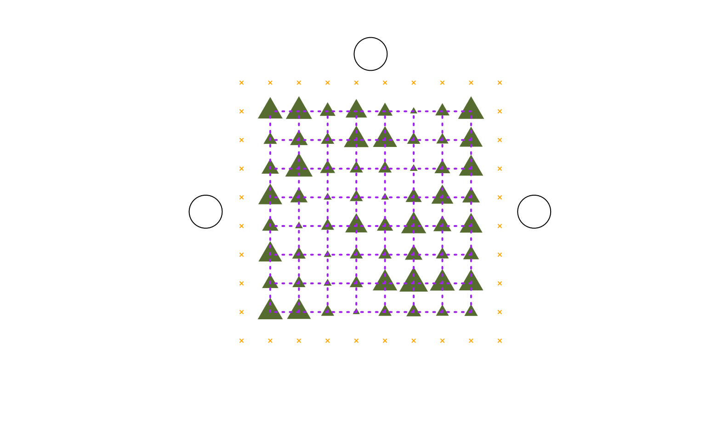
calc_MoransI(object = vn_values_to_show,
ignore_borders = TRUE)
#> [1] 0.1406872Plot disc options
plot_SingleGrainDisc(object = vn_simulated,
main = "",
legend = TRUE,
show_coordinates = TRUE,
show_location_ids = TRUE,
show_positioning_holes = FALSE)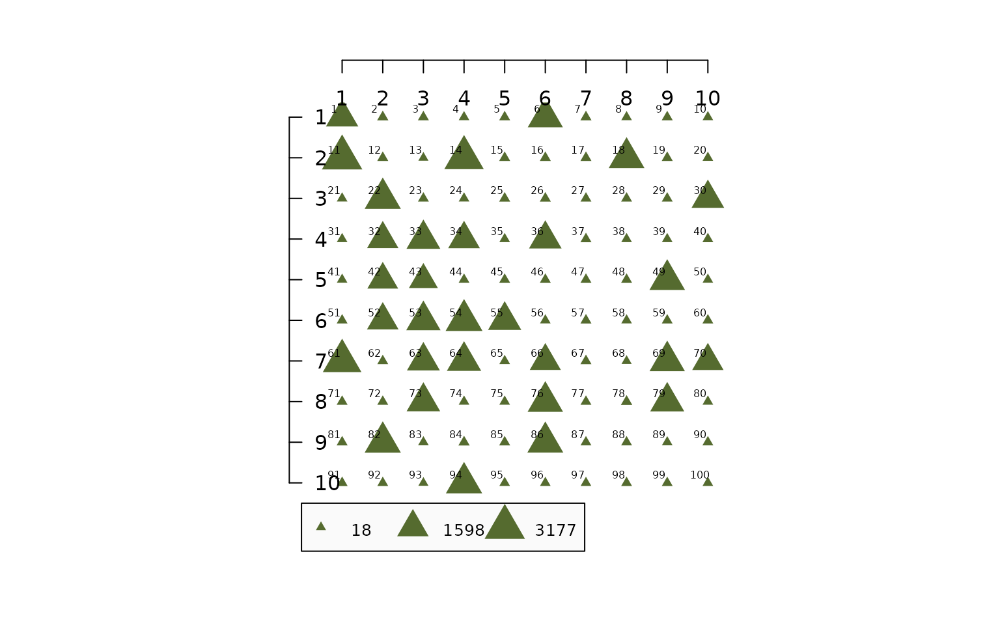
When there is a wide range in values, it can be helpful to apply a logarithmic scale in plotting (note that the default is “square root”):
plot_SingleGrainDisc(object = vn_simulated,
main = "Linear scale",
legend = TRUE,
show_coordinates = FALSE,
show_location_ids = FALSE,
show_positioning_holes = TRUE,
str_transform = "lin")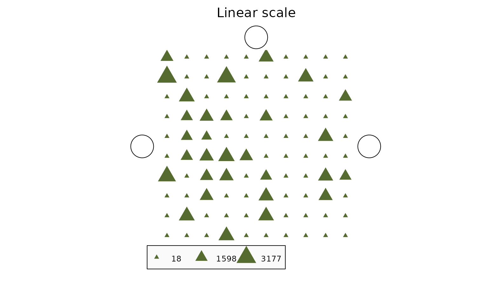
plot_SingleGrainDisc(object = vn_simulated,
main = "Logarithmic scale",
legend = TRUE,
show_coordinates = FALSE,
show_location_ids = FALSE,
show_positioning_holes = TRUE,
str_transform = "log")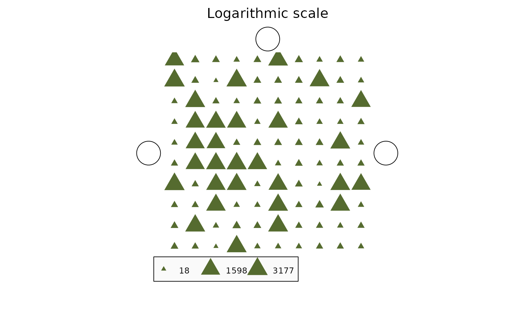
Moran scatterplot options
vn_simulated <- c(rnorm(75, mean = 10, sd = 5),
rnorm(25, mean = 500, sd = 50) )
vn_simulated <- sample(size = 100, vn_simulated)
vn_simulated_with_crosstalk <- apply_Crosstalk(object = vn_simulated,
n_crosstalk = 0.15)
## Base use
plot_MoranScatterplot(object = vn_simulated,
main = "Without crosstalk")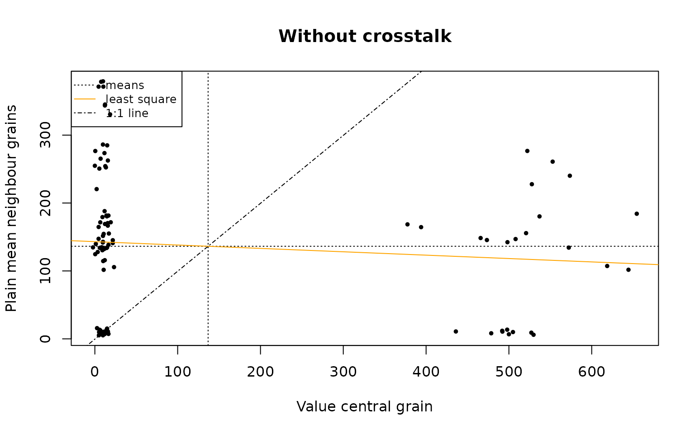
plot_MoranScatterplot(object = vn_simulated_with_crosstalk,
main = "With crosstalk")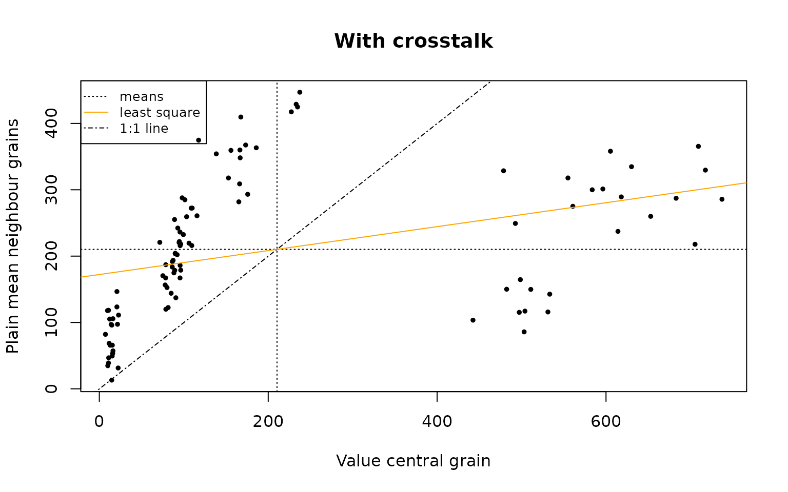
## Layout options
plot_MoranScatterplot(object = vn_simulated_with_crosstalk,
pch = "show_location_ids",
legend = FALSE,
log = "xy",
main = "With location ID's; and with log scales"
)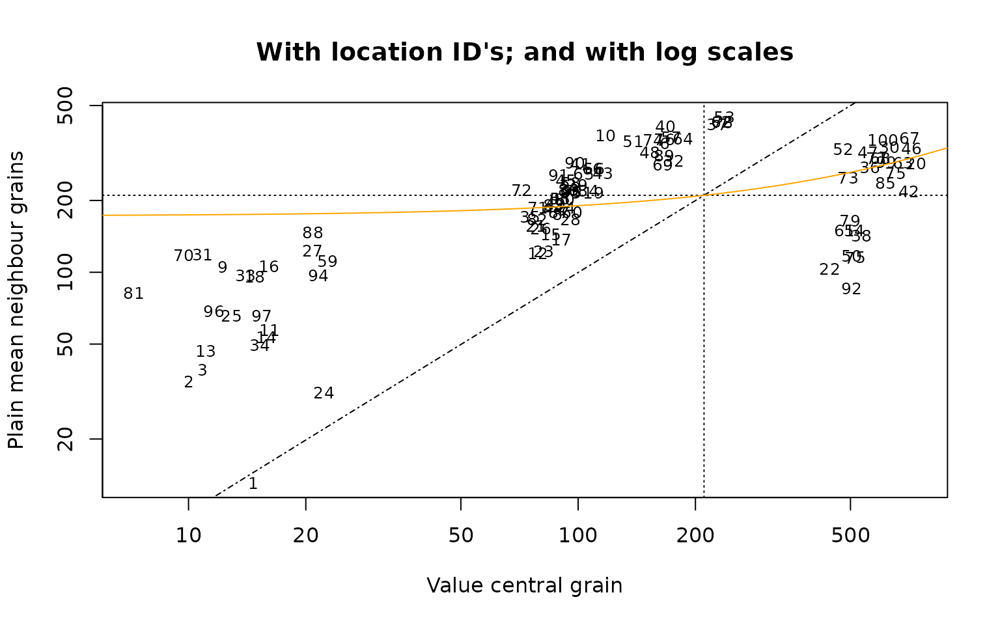
plot_MoranScatterplot(object = vn_simulated_with_crosstalk,
pch = "show_n_neighbours",
legend = FALSE,
str_y_def = "weighted_sum",
main = "With number of neighbours, and other y calculation"
)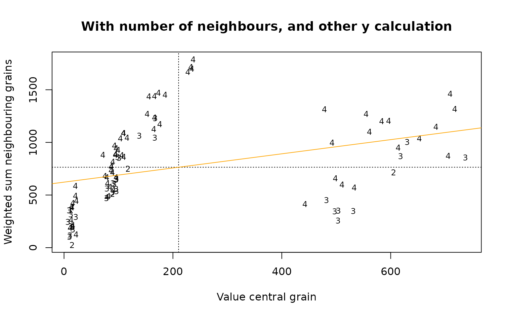
Moran’s I function options
The function calc_MoransI() can return many intermediate
calculation numbers:
calc_MoransI(object = 1:100,
return_intermediate_values = TRUE)
#> $n
#> [1] 100
#>
#> $n_mean
#> [1] 50.5
#>
#> $n_population_variance
#> [1] 833.25
#>
#> $n_sum_similarities
#> [1] 133320
#>
#> $n_sum_weights
#> [1] 180
#>
#> $n_average_auto_correlation
#> [1] 740.6667
#>
#> $n_moransI
#> [1] 0.8888889If the weights (and thus the spatial pattern under investigation) and the number of observations remain the same, this can be useful to understand what is happening. For example, if we add crosstalk, we can see that the population variance in most cases slightly increases (the values are indeed spatially smoothed, but the average increases) but the spatial autocorrelation strongly increases:
vn_simulated <- sample(x = c(rnorm(n = 30, mean = 2000, sd = 500),
rnorm(n = 70, mean = 20, sd = 1)),
size = 100)
vn_simulated <- round(vn_simulated)
vn_simulated_with_crosstalk <- apply_Crosstalk(object = vn_simulated,
n_crosstalk = 0.20)
vn_simulated_with_crosstalk <- round(vn_simulated_with_crosstalk)
df_compare <-
data.frame(Case = c("Without crosstalk", "With crosstalk"),
MoransI = c(calc_MoransI(object = vn_simulated),
calc_MoransI(object = vn_simulated_with_crosstalk)
),
PopulationVar =
c(calc_MoransI(object = vn_simulated,
return_intermediate_values = TRUE)$n_population_variance,
calc_MoransI(object = vn_simulated_with_crosstalk,
return_intermediate_values = TRUE)$n_population_variance),
SpatialAutoCor =
c(calc_MoransI(object = vn_simulated,
return_intermediate_values = TRUE)$n_average_auto_correlation,
calc_MoransI(object = vn_simulated_with_crosstalk,
return_intermediate_values = TRUE)$n_average_auto_correlation)
)
df_compare[,2] <- round(df_compare[,2],2)
(df_compare)
#> Case MoransI PopulationVar SpatialAutoCor
#> 1 Without crosstalk -0.11 849694.4 -97084.16
#> 2 With crosstalk 0.34 884920.6 303927.55